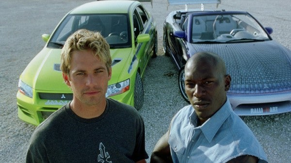
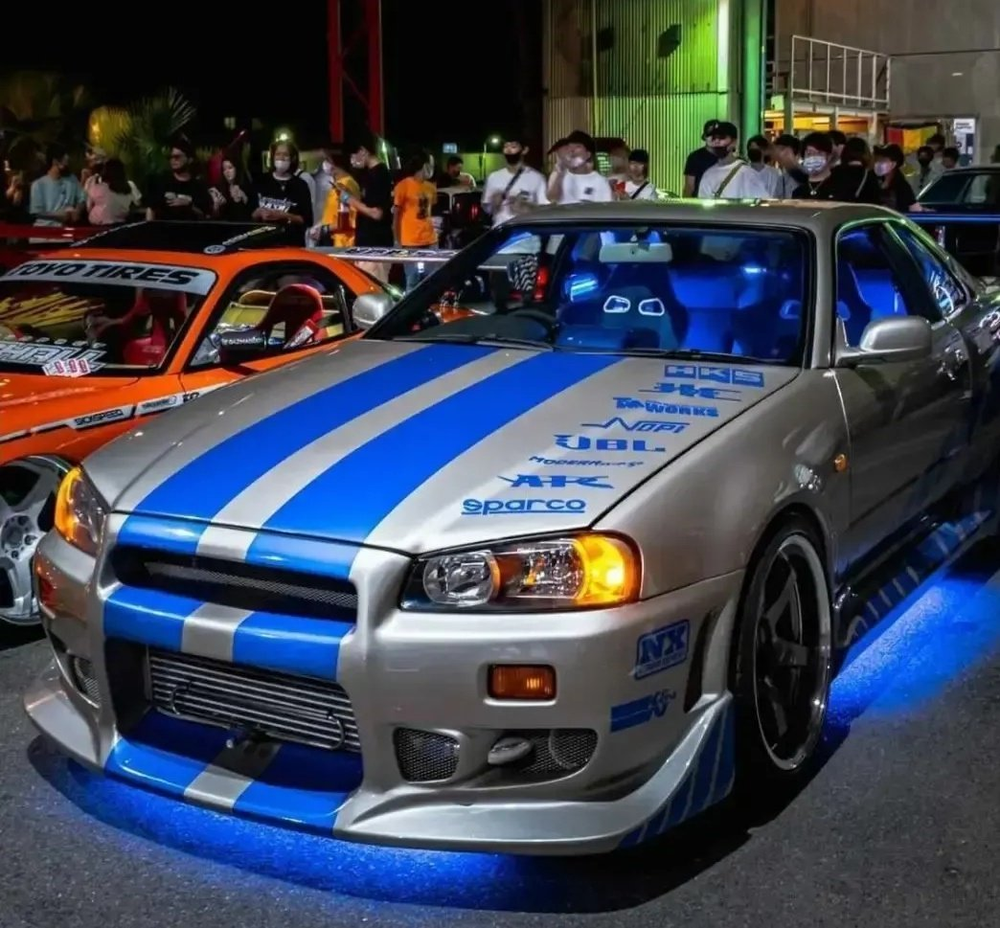
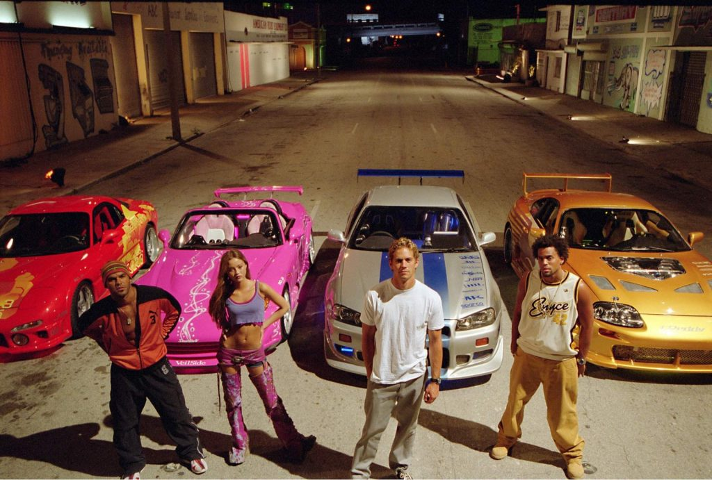
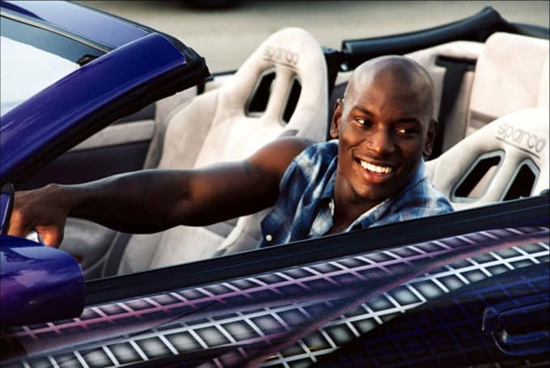
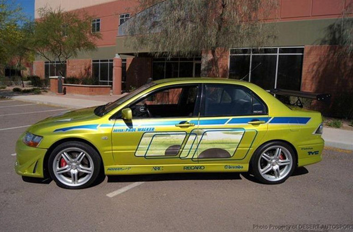
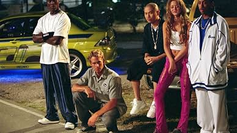

Velozes e Furiosos é uma franquia de mídia e Universo Compartilhado centrado em uma série de filmes de ação que estão amplamente preocupados com corridas de rua, assaltos, espiões e família. A franquia também inclui curtas-metragens, uma série de televisão, videogames e atrações de parques temáticos. É distribuído pela Universal Pictures.



O ex-policial Brian O'Conner (Paul Walker) se muda de Los Angeles para Miami para recomeçar sua vida. Ele acaba se envolvendo em rachas na sua nova cidade com seu amigo Tej (Ludacris) e Suki (Devon Aoki). Suas aventuras terminam quando ele é preso e faz um acordo com agentes do FBI. Brian tem a missão muito perigosa de prender um poderoso chefe do cartel das drogas e contará com a ajuda de seu velho amigo Roman Pearce (Tyrese Gibson) e a agente do FBI Mônica Fuentes (Eva Mendes).
Este é o único filme da série principal sem Vin Diesel como Dominic Toretto.


